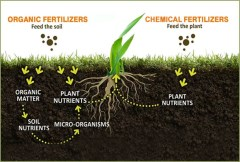

Organic Farming and chemical fertilisers
A
The world’s population continues to climb. And despite the rise of high-tech agriculture, 800 million people don’t get enough to eat. Clearly, it’s time to rethink the food we eat and where it comes from. Feeding 9 billion people will take more than the same old farming practices, especially if we want to do it without felling rainforests and planting every last scrap of prairie. Finding food for all those people will tax farmers’ – and researchers’ – ingenuity to the limit. Yet already, precious aquifers that provide irrigation water for some of the world’s most productive farmlands are drying up or filling with seawater, and arable land in China is eroding to create vast dust storms that redden sunsets as far away as North America. “Agriculture must become the solution to environmental problems in 50 years. If we don’t have systems that make the environment better – not just hold the fort-then we’re in trouble,” says Kenneth Cassman, an agronomist at the University of Nebraska at Lincoln. That view was echoed in January by the Curry report, a government panel that surveyed the future of farming and food in Britain.
B
It’s easy to say agriculture has to do better, but what should this friendly farming of the future look like? Concerned consumers come up short at this point, facing what appears to be an ever-widening ideological divide. In one corner are the techno-optimists who put their faith in genetically modified crops, improved agrochemicals and computer-enhanced machinery; in the other are advocates of organic farming, who reject artificial chemicals and embrace back-to-nature techniques such as composting. Both sides cite plausible science to back their claims to the moral high ground, and both bring enough passion to the debate for many people to come away thinking we’re faced with a stark choice between two mutually incompatible options.
C
Not so. If you take off the ideological blinkers and simply ask how the world can produce the food it needs with the least environmental cost, a new middle way opens. The key is sustainability: whatever we do must not destroy the capital of soil and water we need to keep on producing. Like today’s organic farming, the intelligent farming of the future should pay much more attention to the health of its soil and the ecosystem it’s part of. But intelligent farming should also make shrewd and locally appropriate use of chemical fertilisers and pesticides. The most crucial ingredient in this new style of agriculture is not chemicals but information about what’s happening in each field and how to respond. Yet ironically, this key element may be the most neglected today.
D
Clearly, organic farming has all the warm, fuzzy sentiment on its side. An approach that eschews synthetic chemicals surely runs no risk of poisoning land and water. And its emphasis on building up natural ecosystems seems to be good for everyone. Perhaps these easy assumptions explain why sales of organic food across Europe are increasing by at least 50 per cent per year.
E
Going organic sounds idyllic – but it’s native, too. Organic agriculture has its own suite of environmental costs, which can be worse than those of conventional farming, especially if it were to become the world norm. But more fundamentally, the organic versus-chemical debate focuses on the wrong question. The issue isn’t what you put into a farm, but what you get out of it, both in terms of crop yields and pollutants, and what condition the farm is in when you’re done.
F
Take chemical fertilisers, which deliver nitrogen, an essential plant nutrient, to crops along with some phosphorus and potassium. It is a mantra of organic farming that these fertilisers are unwholesome, and plant nutrients must come from natural sources. But in fact, the main environmental damage done by chemical fertilisers as opposed to any other kind is through greenhouse gases-carbon dioxide from the fossil fuels used in their synthesis and nitrogen oxides released by their degradation. Excess nitrogen from chemical fertilisers can pollute groundwater, but so can excess nitrogen from organic manures.
G
On the other hand, relying solely on chemical fertilisers to provide soil nutrients without doing other things to build healthy soil is damaging. Organic farmers don’t use chemical fertilisers, so they are very good at building soil fertility by working crop residues and manure into the soil, rotating grain with legumes that fix atmospheric nitrogen, and other techniques.
H
This generates vital soil nutrients and also creates a soil that is richer in organic matter, so it retains better and is hospitable to the crop’s roots and creatures such as earthworms that help maintain soil fertility. Such soil also holds water better and therefore make more efficient use of both rainfall and irrigation water. And organic matter ties up CO2 in the soil, helping to offset emissions from burning fossil fuels and reduce global warming.
I
Advocates of organic farming like to point out that fields managed in this way can produce yields just as high as fields juiced up with synthetic fertilisers. For example, Bill Liebhardt, research manager at the Rodale Institute in Kutztown, Pennsylvania, recently compiled the results of such comparisons for corn, wheat, soybeans and tomatoes in the US and found that the organic fields averaged between 94 and 100 per cent of the yields of nearby conventional crops.
J
But this optimistic picture tells only half the story. Farmers can’t grow such crops every year if they want to maintain or build soil nutrients without synthetic fertilisers. They need to alternate with soil-building crops such as pasture grasses and legumes such as alfalfa. So in the long term, the yield of staple grains such as wheat, rice and corn must go down. This is the biggest cost of organic farming. Vaclav Smil of the University of Manitoba in Winnipeg, Canada, estimates that if farmers worldwide gave up the 80 million tonnes of synthetic fertiliser they now use each year, total grain production would fall by at least half. Either farmers would have to double the amount of land they cultivate – at catastrophic cost to natural habitats – or billions of people would starve.
K
That doesn’t mean farmers couldn’t get by with less fertiliser. Technologically advanced farmers in wealthy countries, for instance, can now monitor their yields hectare by hectare, or even more finely, throughout a huge field. They can then target their fertiliser to the parts of the field where it will do the most good, instead of responding to average conditions. This increases yield and decreases fertiliser use. Eventually, farmers may incorporate long-term weather forecasts into their planning as well, so that they can cut back on fertiliser use when the weather is likely to make harvests poor anyway, says Ron Olson, an agronomist with Cargill Fertilizer in Tampa, Florida.
L
Organic techniques certainly have their benefits, especially for poor farmers. But strict “organic agriculture”, which prohibits certain technologies and allows others, isn’t always better for the environment. Take herbicides, for example. These can leach into waterways and poison both wildlife and people. Just last month, researchers led by Tyrone Hayes at the University of California at Berkeley found that even low concentrations of atrazine, the most commonly used weedkiller in the US, can prevent frog tadpoles from developing properly.
Questions 1-4
Use the information in the passage to match the people (listed A-D) with opinions or deeds below.
Write the appropriate letters A-D in boxes 1-4 on your answer sheet.
A Vaclav Smil
B Bill Liebhardt
C Kenneth Cassman
D Ron Olson
1 Use of chemical fertilizer can be optimised by combining weather information.
2 Organic framing yield is nearly equal to traditional ones.
3 Better agricultural setting is a significant key to solve environmental tough nut.
4 Substantial production loss would happen in case all farmers shifted from using synthetic fertiliser.
Questions 5-9
Do the following statements agree with the information given in Reading Passage 1?
In boxes 5-9 on your answer sheet, write
YES if the statement agrees with the information
NO if the statement contradicts the information
NOT GIVEN if there is no information on this
5 Increasing population, draining irrigation, eroding farmland push agricultural industry to extremity.
6 There are only two options for farmers; they use chemical fertiliser or natural approach.
7 Chemical fertilizer currently is more expensive than the natural fertilisers.
8 In order to keep nutrients in the soil, organic farmers need to rotate planting method.
9 “organic agriculture” is the way that environment-damaging technologies are all strictly forbidden.
Questions 10-13
Complete the following summary of the paragraph of Reading Passage
Using NO MORE THAN TWO WORDS from the Reading Passage for each answer.
Write your answers in boxes 10-13 on your answer sheet.
Several 10 approaches need to be applied in order that global population wouldn’t go starved. A team called 11 repeated the viewpoint of a scholar by a survey in British farming. More and more European farmers believe in 12 farming these years. The argument of organic against 13 seems in an inaccurate direction.
---End of the Test---
Please Submit to view your score, solution and explanations.